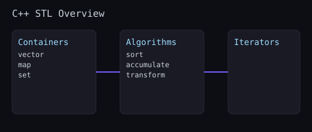

The C++ Standard Library provides containers and algorithms. Combine them to write expressive, efficient code.

#includestd::vector v{1,2,3}; v.reserve(10); // avoid reallocations v.push_back(4); for(int n : v) { /*...*/ }
#include
#include#include int sum = std::accumulate(v.begin(), v.end(), 0); std::sort(v.begin(), v.end()); std::transform(v.begin(), v.end(), v.begin(), [](int x){ return x*2; }); // Erase-remove idiom v.erase(std::remove_if(v.begin(), v.end(), [](int x){ return x < 0; }), v.end());
if (auto it = sorted.find("alice"); it != sorted.end()) {
auto const& [key, value] = *it;
// use key, value
}std::transform to uppercase all items in a vector.std::vector vs std::list for random access.unordered_map for fast lookups when ordering is unnecessary; remember to reserve capacity for vectors in hot paths.